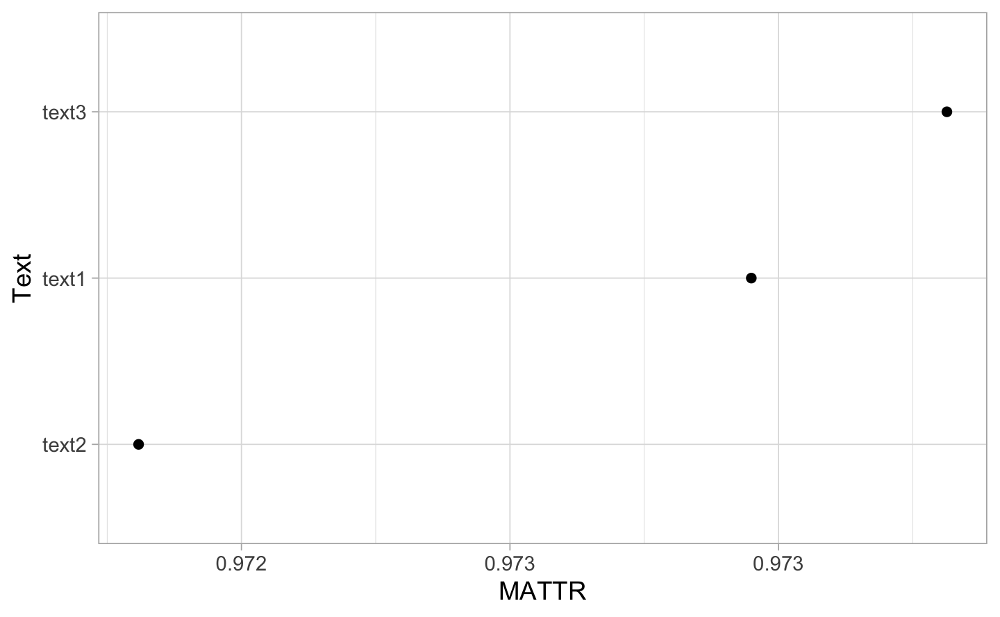
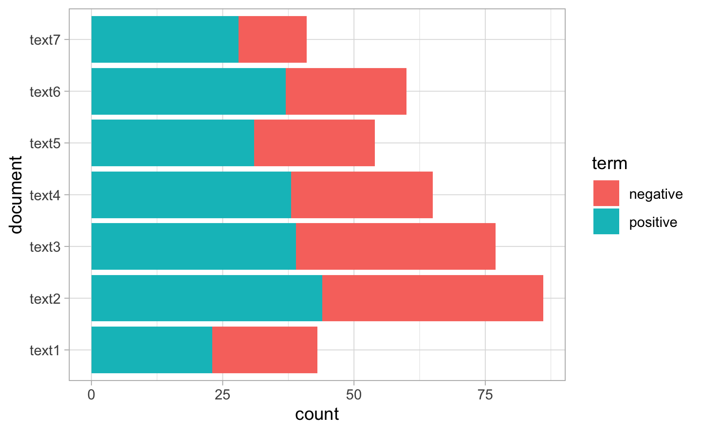

Chapter 5 Sentiment Analasis
We use the nrc dictionary. From the token list per document boris.tok, we join the corresponding qualifier in nrc using inner.joint:
| Document | word | sentiment |
|---|---|---|
| doc1 | emergency | fear |
| doc1 | emergency | negative |
| doc1 | emergency | sadness |
| doc1 | emergency | surprise |
| doc1 | committee | trust |
| doc1 | deputy | trust |
Then several summaries can be obtained. Below, using a table version and a long format
| anger | anticipation | disgust | fear | joy | negative | positive | sadness | surprise | trust | |
|---|---|---|---|---|---|---|---|---|---|---|
| doc1 | 7 | 13 | 5 | 15 | 3 | 14 | 31 | 7 | 3 | 22 |
| doc2 | 16 | 31 | 17 | 33 | 6 | 35 | 56 | 20 | 5 | 40 |
| doc3 | 12 | 15 | 14 | 24 | 9 | 22 | 40 | 14 | 7 | 27 |
| doc4 | 11 | 22 | 8 | 14 | 7 | 20 | 46 | 9 | 6 | 33 |
| doc5 | 11 | 17 | 10 | 19 | 8 | 24 | 30 | 12 | 5 | 19 |
| doc6 | 8 | 16 | 6 | 14 | 8 | 21 | 43 | 8 | 1 | 34 |
| doc7 | 3 | 12 | 4 | 12 | 7 | 13 | 24 | 4 | 1 | 22 |
 to compare the document, we rescale them by their lenght
to compare the document, we rescale them by their lenght

5.1 Value-based
Now we use the afinn dictionary. The main difference is that rach word receives a value rather than a qualifier. Then the average score per document is computed.
| word | value |
|---|---|
| abandon | -2 |
| abandoned | -2 |
| abandons | -2 |
| abducted | -2 |
| abduction | -2 |
| abductions | -2 |

5.2 With quanteda
The difference with tidytext is essentially in the manipulation of the objects. Note that this condition storngly the capactiy of sentiment analysis. Dir example, below we use the dictionnary data_dictionary_LSD2015. It provides positive and negative values.
Frsit, we prepare the date
| Text | Types | Tokens | Sentences |
|---|---|---|---|
| text1 | 266 | 577 | 21 |
| text2 | 409 | 1170 | 49 |
| text3 | 405 | 1165 | 42 |
| text4 | 406 | 1175 | 51 |
| text5 | 321 | 904 | 1 |
| text6 | 357 | 946 | 42 |
| text7 | 300 | 729 | 33 |
Now we the dunction tokens_lookup is used to match the tokens in the documents to the tokens in the dictionary and extract their corresponding value ( positive or negative)

5.3 Using valence shifter
The sentimentr library offers some function to compute sentiments integrating valence shiter. One important apsect is that it cannot be applied to a Bag Of Word model.